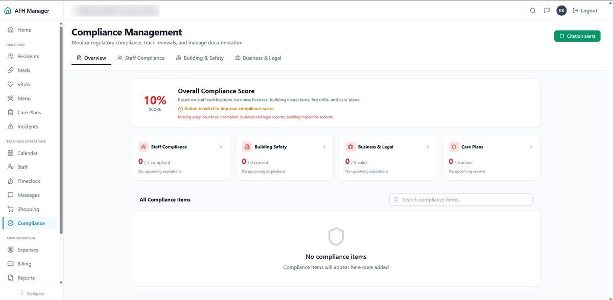
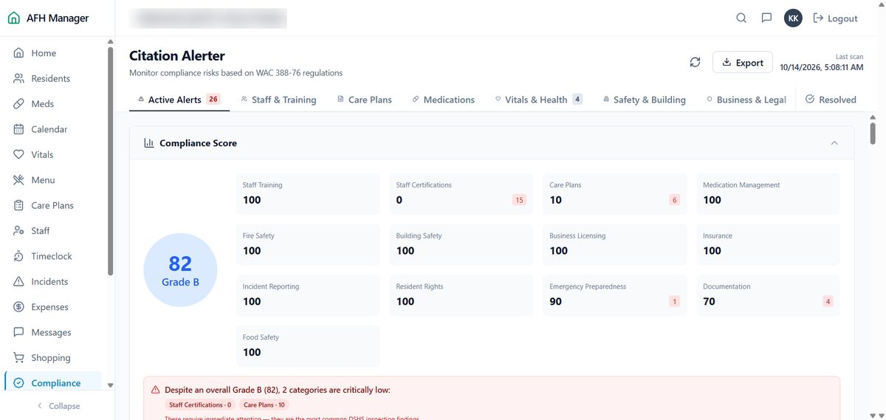
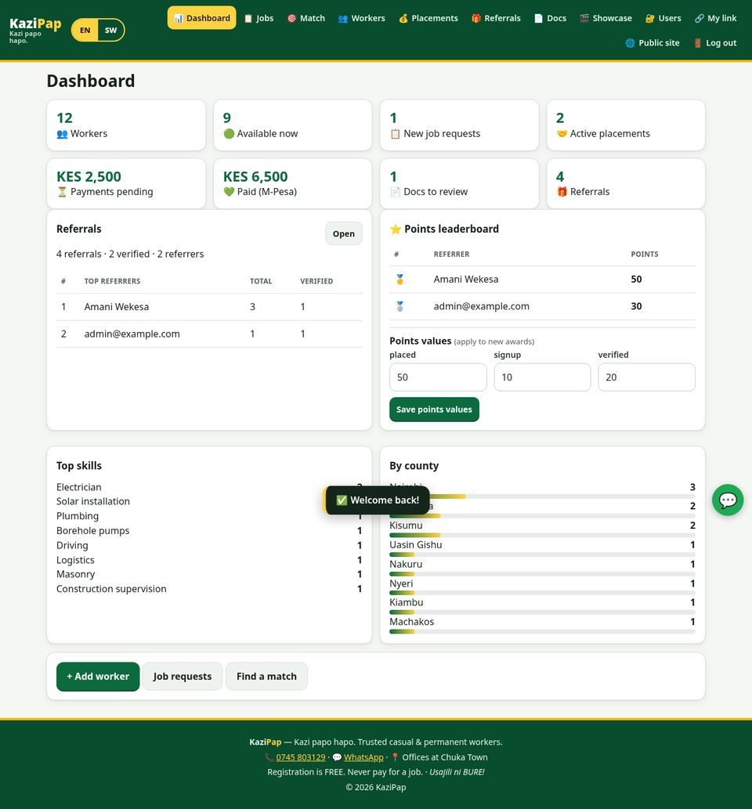
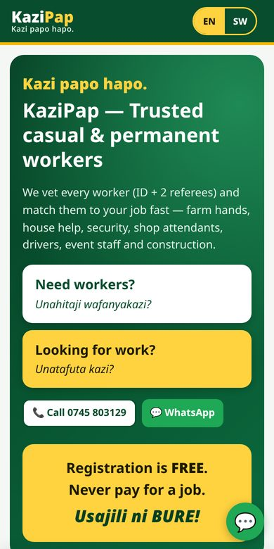
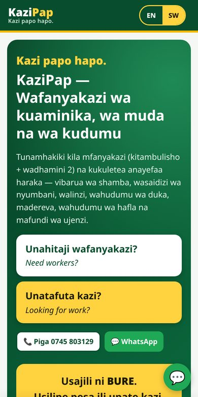

Nairobi, Kenya · Open to QA, testing and junior developer roles
Keith Kelvin Kithinji
Junior QA Analyst · Software Tester & Developer
I find where systems break and build systems that work. I recently tested a US care-home compliance web app across 12 modules and documented 16 defects, and I designed and built KaziPap, a job-matching platform for a Kenyan recruitment business.
- 16defects documented in AFH Manager
- 27test cases written in the owner's format
- 12app areas tested
- 1platform built: KaziPap, ready for deployment
About
I'm an ICT diploma student at Michuki National Polytechnic and a junior QA analyst and developer. My testing work focuses on what users actually rely on: whether the data is valid, and whether the same fact says the same thing on every screen. On the build side, I act as product owner and developer, defining requirements and building with AI-assisted tools in Python Flask and JavaScript.
Before this, I did freelance IT support: troubleshooting devices, configuring routers and setting up LANs. I'm also following a structured self-learning track in AI, data analysis and quantitative finance, with a long-term goal of applying quantitative methods to real financial and computational problems.
I'm analytical, a fast learner and self-driven, and I speak English and Swahili fluently.
Skills
Development
Tools & Platforms
IT Support & Analytical
Projects
Two recent case studies: one breaking a system, one building one.
QA case study · October 2026
AFH Manager: QA testing of a care-home compliance app
Problem
AFH Manager helps adult family homes in Washington State manage residents, staff and inspection readiness. Managers need to trust its compliance figures, so any data that is wrong or contradictory carries real risk.
What I did
- Tested login, dashboard, residents, vitals, menu, care plans, incidents, staff, compliance, the Citation Alerter, protected record disclosure and the daily email.
- Designed 27 test cases and logged every defect with steps to reproduce, expected and actual results, severity and priority, using the owner's tracker format.
- Redacted evidence screenshots so that no private details were shared.
Outcome
- 2 Critical
- 4 High
- 7 Medium
- 3 Low
The top risk was contradictory compliance scores (10% on one screen, 82/Grade B on another). Other findings covered staff compliance status that differed between modules, future birthdates producing negative ages, misclassified incidents and incorrect room occupancy. I delivered a QA findings report for management and developers with prioritised fixes and a retest plan.
Tech & methods


Build case study · Prototype, ready for deployment
KaziPap: workforce management & job matching
Problem
KaziPap, a recruitment business in Chuka Town, supplies casual and permanent workers. It needed one place to register and vet workers, match them to employers' job requests, track placements and payments, and grow through referrals. It also had to work on phones and in both English and Kiswahili.
What I did
- Defined the requirements as product owner and built the platform with AI-assisted development tools.
- Admin and worker roles; worker self-registration with a Kenya Data Protection Act consent step.
- Qualification and specialisation matching with scoring; ID and certificate upload with admin verification.
- Referral links with a points system and admin tracking; employer job requests; placements with a 30-day replacement window.
- M-Pesa payment record-keeping, testimonials and a video showcase, and a mobile-first UI with an English/Kiswahili switch.
- Production hardening (CSRF protection, rate limiting) and a Docker/Caddy deployment setup.
Outcome
A working prototype, ready for deployment, with launch planned at kazipap.ke. Screenshots show sample data only.
Tech stack



AI & tech learning track
A structured self-learning roadmap in AI, software development and quantitative methods, where I document my progress and practical implementations. I'm also exploring crypto markets and digital finance systems.
This portfolio
A static, mobile-first site in plain HTML, CSS and a little JavaScript, hosted on GitHub Pages. Source: github.com/keithkelvin308-a11y/keithkelvin308-a11y.github.io
Experience
-
October 2026 – Present
QA Analyst · AFH Manager (afhapp.com)
Tested a US adult family home care management web app built around WAC 388-76 compliance. I documented 16 defects (2 critical, 4 high, 7 medium, 3 low), wrote 27 test cases in the owner's tracker format and produced a QA findings report for management and developers.
-
2026
Product Owner & Developer · KaziPap, Chuka Town
Defined the requirements for a workforce management and job-matching platform and built it with AI-assisted tools (Flask, SQLite/PostgreSQL, vanilla JS). Prototype, ready for deployment.
-
2023 – Present
Freelance IT Support · Self-employed
Troubleshooting devices and network configurations, setting up routers and LANs, and diagnosing and improving computer performance with system tools.
Education
Diploma in Information and Communication Technology (ICT)
Michuki National Polytechnic · 2025 – 2026
Languages: English and Swahili (both fluent) · References available on request.
Contact
Hiring for QA, testing or a junior developer role? I'd like to hear from you.
GitHub: github.com/keithkelvin308-a11y · LinkedIn: linkedin.com/in/keith-kelvin-b60920330
Download CV (PDF)